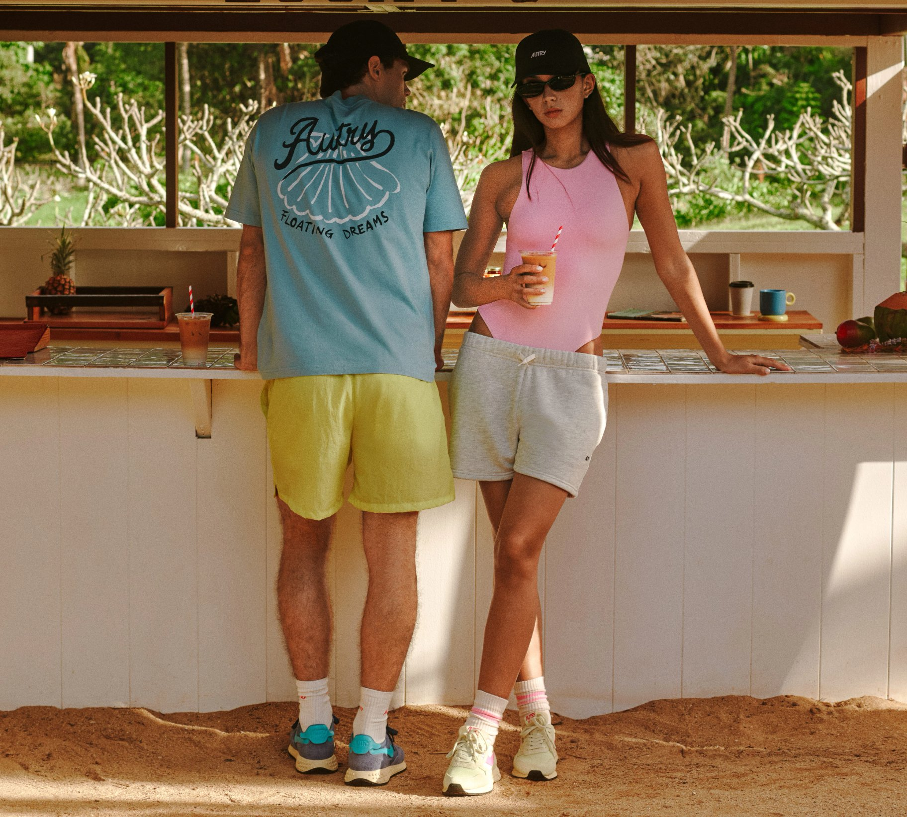
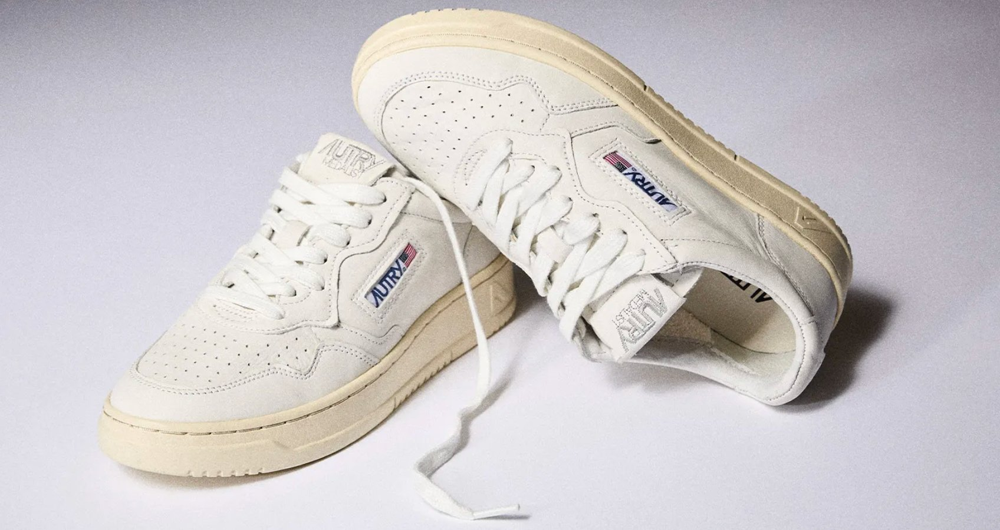
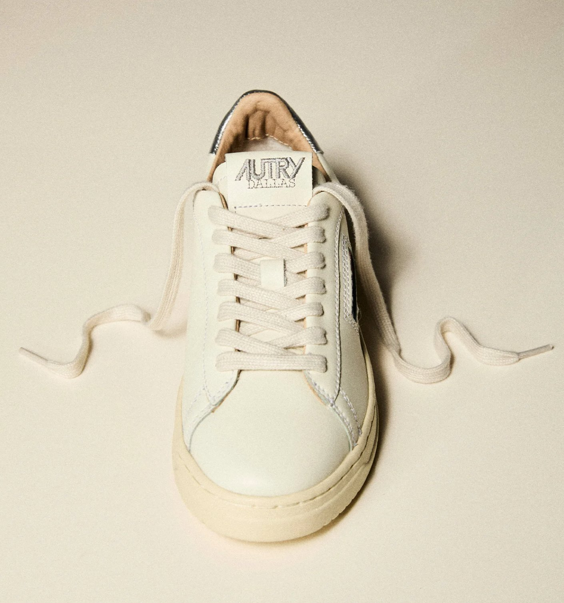
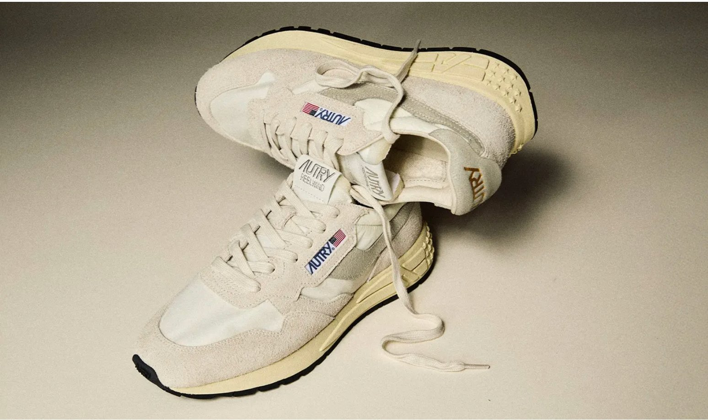
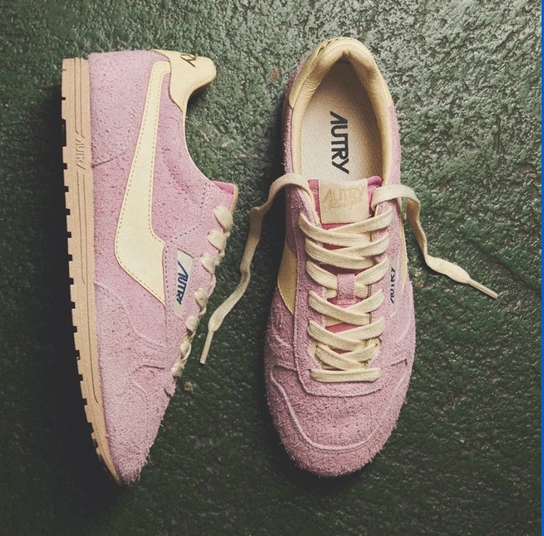

AUTRY（オートリー）は、1982年にアメリカ・テキサス州ダラスで誕生したスニーカーブランド。"The shoe with the American flag"のキャッチコピーで知られ、売上の一部をニューヨーク・自由の女神の修復費として寄付していることから、ブランドロゴに正式な星条旗の使用を認められた数少ないブランドのひとつ。
ラグジュアリーブランドのDNAを持ちながら、スポーツシューズの快適さも兼ね備えた独自のポジションで、世界中のファッション感度の高い層から支持されている。
カテゴリ：シューズ（スニーカー）／ Tシャツ・ソックス・キャップ等アパレルも展開
ランニング・エアロビクスブーム全盛期に誕生。星条旗ロゴで北米市場での認知を拡大。
アメリカの雑誌でシューズマーケット最優秀賞に選出。ブランドを代表するアイコンモデルとなる。
約20年間、ヴィンテージ愛好家の間で"幻のスニーカー"として語り継がれる存在に。
GUCCI・BOTTEGA VENETA・CELINEのCEOを歴任したパトリツィオ・ディ・マルコがチェアマンに就任。イタリア投資会社がブランドを買収し、ラグジュアリー出身の精鋭チームが集結。
豊田貿易を通じ日本市場へ本格上陸。BTS・BLACKPINKが着用しK-POPファンを中心に爆発的な人気に。
2025年AUTRY JAPAN設立、今後店舗を拡大予定。

カウレザー・スエード・ゴートスキンなど上質素材を使用。高級ブランドのスニーカーに匹敵するエレガントさ。
自由の女神修復に寄付を続け、公式に星条旗の使用を認められた数少ないブランド。ロゴひとつに物語がある。
ジャケパンからデニム、スカートまで何でも合う。タキシードに合わせるセレブが続出するほどの汎用性。
新品でも"こなれたベージュ"のソールカラー。レトロトレンドを先取りしつつ今っぽいシルエット。
メンズ・レディース両展開。カップルでのペア使いも人気。15歳〜60代まで男女5:5の比率で支持される。
ラグジュアリーほど高くなく、スポーツブランドより上質。¥30,000前後という絶妙なポジション。
接客時に必ず話題になる代表モデルを押さえておきましょう。

Autry Medalistは、エッセンシャルでリラックス感のあるデザインが魅力のスニーカー。1980年代のテニススタイルを思わせるスポーティなシルエットに、ヴィンテージ感と上質なラグジュアリーを融合し、デイリーからスマートカジュアルまで幅広いスタイルに自然に馴染む一足。ロゴ入りの同色ラバーソール、パッド入り履き口、つま先には通気性のいいパンチング加工を配し、細部まで快適さと機能美を追求しました。

Dallasスニーカーは、クラシックで本格的なデザインにより、控えめな上質さとカジュアルな雰囲気を演出します。ミニマルなシルエットとホワイトレザーのアッパーに、ステッチのアクセントとカラーヒールが映えます。深みのあるラバーソールが洗練されたヴィンテージ感をプラス。Autryのスピリットとシンプルさの美学を体現した一足です。

Reelwindは、Autryならではのヴィンテージ感にランニングの機能性を融合。80年代を思わせるスリムなシルエットとレトロなデザインが特徴です。軽やかさと柔軟性、優れたグリップで日常に快適さをプラス。上質な素材のコンビネーションが、シンプルさと革新性を引き立てます。

Autry Windspinは、アメリカン・ドリームの精神にイタリアらしい洗練を融合させた、ブランドの新たなアイコンモデルです。柔らかなスエードにヴィンテージ感を纏い、洗練された細身のシルエットです。超フラットなラバーソールは、都会のあらゆる路面で優れたグリップ力を発揮します。
伊勢丹新宿店ではシューズに加え、Tシャツ・ソックス・キャップ等アパレルも展開予定。今後洋服取り扱いも拡大予定。
接客でブランドの話をする際に使えるエピソードです。
"黒のタキシードに合わせてもいい、ショートパンツにラフに合わせてもいい。ビジネスとカジュアルを超えるハイブリッドなスタイル"
— 10 Corso Como ミラノ会長
K-POPアイドルの着用をきっかけに韓国で爆発的に普及。その後ヨーロッパ・日本へと波及し、「かぶりたくないけど定番を探している」層を中心に支持を拡大。
AUTRYは現在、既存のスポーツブランドとラグジュアリーブランドの中間という独自ポジションを確立。ファッションの最前線であるピッティウォモやメットガラでも存在感を示し、今まさに上昇曲線を描いている。
日本では2022年に本格上陸したばかりで、伊勢丹新宿の常設店舗化はその大きな節目。今後、アパレルラインの強化や取り扱い店舗の拡大が見込まれ、ブランドの成長フェーズに最初から関われるタイミング。
| 時給 | 未経験 ¥1,500〜 ／ 経験者 ¥1,650〜 経験1年以上はいきなり¥1,650スタート。1年後に必ず¥1,650へ昇給。 |
| 月収目安 | 23.6万〜25.9万円＋残業手当（7.5h×21日） |
| 勤務地 | 伊勢丹新宿メンズ館（新宿三丁目 徒歩3分 ／ 新宿 徒歩8分） |
| スケジュール | 8/19〜 POP UP スタート → 9/23〜 常設店舗オープン |
| 勤務時間 | 実働7.5時間シフト制（休憩90分） |
| 休日 | 週休2日シフト制 |
| 期間 | 3ヶ月以上の長期 ／ 正社員へのステップも相談可 |
| 交通費 | 全額支給 |
| 応募資格 | アパレル業界での販売経験（半年以上）・コミュニケーション能力・レジ対応可能な方 英語・中国語ができると尚可 |
| 服装 |
制服 Tシャツ・スウェット・パンツ・バンダナ・シューズ貸与 髪色 清潔感あれば自由（百貨店規定内） ネイル 業務に支障なければアートもOK アクセ 制服に合うものはOK |
| 主な業務 | 接客販売・フィッティング・ラッピング・レジ補助・商品陳列・在庫管理・店内美化など |
| 研修 | 入店後、座学にてブランドの歴史・主力商品の説明あり。安心してスタートできます。 |
キャリア手当10万円：同職種2年以上の経験×フルタイム勤務可能な方は全員対象。1ヶ月勤務後の給与に一括支給。
来社特典 ¥1,000ギフトカード：新宿オフィスでの登録会に参加された方にプレゼント。
※外部サイト（staff-b.com）に移動します
WWD JAPAN vol.2471（2026年5月11日号）
"スニーカーブランド"から"プレミアムライフスタイルブランド"へ ― 日本法人を立ち上げた「オートリー」の展開戦略